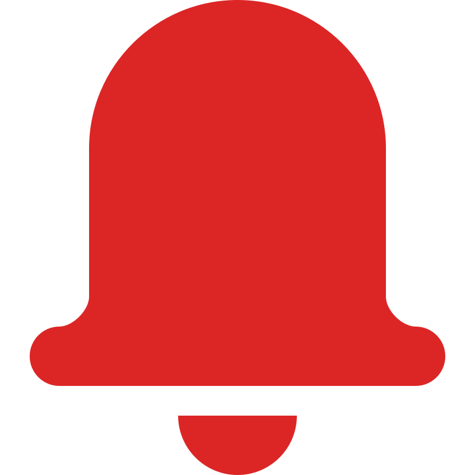

Bienvenida, Diana
Lunes, 16 de junio de 2025
Próxima cita
16 de junio, 2025
10:00 AM - Limpieza
dental
Tratamiento actual
Ortodoncia
Progreso: 60%
Mensajes no leÃdos
2 mensajes
Último: hace 2 horas
Próximas citas
Limpieza dental - Dr. Carlos RodrÃguez
📆
15 de junio, 2025 · 🕒 10:00 AM
RadiografÃa dental - Dra. Ana MartÃnez
📆
22 de junio, 2025 · 🕒 2:30 PM
Actividad reciente
-
Resultados de rayos X disponibles
(Hace 2 dÃas) -
Cita completada: Revisión de ortodoncia
(Hace 1 semana) -
Mensaje enviado al Dr. GarcÃa
(Hace 1 semana) -
Pago realizado: $150.000
(Hace 2 semanas)
Recordatorios y consejos
-

Recordatorio de medicación
No olvide tomar su medicación antiinflamatoria durante 3 dÃas más. -
Consejo de higiene dental
Recuerde cepillar sus dientes después de cada comida y usar hilo dental diariamente. -
Próxima revisión de ortodoncia
Su próximo ajuste de ortodoncia debe programarse para julio.
Progreso del tratamiento
Ortodoncia
Iniciado: 10 de enero, 2025
Progreso general:
60%
Alineación:
75%
Corrección de mordida:
45%
Notas del dentista:
El tratamiento de
ortodoncia progresa según lo esperado. Los dientes frontales
superiores han mostrado una excelente respuesta. Continúe con el
uso de elásticos según las instrucciones para mejorar la
corrección de la mordida.
– Dr. Carlos RodrÃguez, 1 de junio,2025